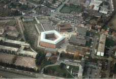
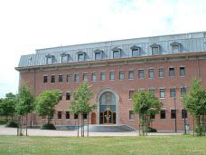

Evol@Mons 2008 |
 |
 |
Research Seminar on Software Evolution
Evol@Mons 2008 is a one-day seminar on research advances in software evolution. Renowned experts in the field will present their latest scientific results in this rapidly evolving domain. As such, this seminar, intends to shed light on some of the ongoing research issues in this important and fascinating research area. A number of open problems in the research domain of software evolution will be discussed, and solutions to some of these problems will be proposed. The seminar will address important research topics in software evolution related to:
- technical and managerial aspects of software maintenance and evolution
- tools, techniques, principles, best practices, formal foundations, case studies for software evolution
For the 2008 edition of this seminar, the following foreign researchers have agreed to present their latest research:
- Ralf Laemmel. Institut fuer Informatik, Universitaet Koblenz-Landau, Germany. Evolution challenges around XML and software languages.
- Andy Zaidman. Software Engineering Research Group, Delft University of Technology, The Netherlands. Mining Software Repositories to Study Co-Evolution of Production & Test Code.
- Stéphane Ducasse. Equipe-Projet ADAM, INRIA Futurs, France. An introduction to software reengineering.
- Tudor Girba. Software Composition Group, Institut fuer Informatik, Universitaet Bern, Switzerland. Modeling History to Understand Software Evolution.
This seminar is organised under the auspices of the GRASCOMP Graduate School in Computing Science. It is part of the two-day seminar called "Cours doctoral transfrontalier sur l'évolution et l'adaptation logicielle en informatique". The second day of the seminar, called Adapt@Lille, is organised by Lionel Seinturier of USTL-INRIA (Villeneuve d'Ascq, France), and focuses on "Advanced Topics in Software Engineering for Adaptive Middleware". This second seminar will take place on 13 march 2008.

{kind=link}
{kind=link}